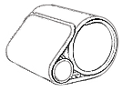
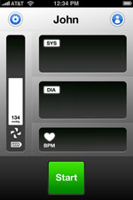

Table of content
Introduction
Thank you for purchasing the Withings Blood Pressure Monitor.
The Withings Blood Pressure Monitor is a fully automatic blood pressure monitor, operating on the oscillometric principle. It measures your blood pressure and pulse rate simply and quickly.
The monitor stores measurements results within your iPhone, iPad or iPod Touch and transmit it to the Withings website for an easy access from your internet browser.
Back to table of content
Requirements
In order to use your Withings Blood Pressure monitor, you need to plug it to an iPhone, iPad or iPod Touch (updated to iOS 3 or higher).
Back to table of content
Package Contents
|
|
Four « AAA » alkaline (LR3) cells (already inserted)
|
|

|
Withings Blood Pressure Monitor
|
|
|
Instruction manual
|
Back to table of content
Important Safety Information
Consult your doctor during pregnancy, arrhythmia and arteriosclerosis. Please read this section carefully before using the unit.
Warning
- General usage
- Always consult your doctor. Self-diagnosis of measurement results and self treatment are dangerous
- People with severe blood flow problems, or blood disorders, should consult a doctor before using the unit. Cuff inflation can cause internal bleeding.
- Operational factors such as common arrhythmias, ventricular premature beats, atrial fibrillation, arterial sclerosis, poor perfusion, diabetes, age, pregnancy, pre-eclampsia or renal disease can affect the performance of the automated sphygmomanometer and/or its blood pressure reading.
- "AAA" Alkaline cells usage
- If "AAA" alkaline cells fluid should get in your eyes, immediately rinse with plenty of clean water. Consult a doctor immediately.
Intended use
The device is a digital monitor intended for use in measuring blood pressure and pulse rate in adult patient population with arm circumference ranging from 9 inches to 17 inches (22cm-42cm).
This device is not intended to be a diagnostic device. Contact your physician if hypertensive values are indicated.
Caution
- General usage
- Do not leave the unit unattended with infants or persons who cannot express their consent.
- Do not use the unit for any purpose other than measuring blood pressure.
- Do not disassemble the unit.
- Do not operate unit in a moving vehicle (car, airplane).
- "AAA" alkaline cells usage
- If "AAA" alkaline cells fluid should get on your skin or clothing, immediately rinse with plenty of clean water.
- Use only four « AAA » alkaline "AAA" alkaline cells with this unit. Do not use any other types of "AAA" alkaline cells.
- Do not insert "AAA" alkaline cells with their polarities incorrectly aligned.
- Replace old "AAA" alkaline cells with new ones immediately. Replace all four "AAA" alkaline cells at the same time.
- Do not use new and used "AAA" alkaline cells together
Back to table of content
GENERAL SAFETY AND PRECAUTIONS
- Do not forcibly bend the arm cuff
- Do not inflate the arm cuff when it is not wrapped around your arm
- Do not apply strong shocks and vibrations to the unit or drop it
- Do not take measurement after bathing, drinking alcohol, smoking, exercising or eating.
- Do not immerse the arm cuff in water
Back to table of content
Replacing the "AAA" alkaline cells
If the "AAA" alkaline cells low symbol appears in the Withings application, replace all four "AAA" alkaline cells at the same time.
- Remove the "AAA" alkaline cells cover
- Install or replace four "AAA" alkaline cells so that the + (positive) and – (negative) polarities match the polarities indicated on the "AAA" alkaline cells compartment.
- Put the "AAA" alkaline cells cover back in place
Back to table of content
Installation
-
Unlock your iOS device and plug the Withings Blood Pressure Monitor to its connector.
-
Follow the instructions to install the Withings application
-
The Withings application will automatically launch everytime you connect your Withings Blood Pressure Monitor to your iOS device
Back to table of content
Using the unit
How to sit correctly when taking a measurement
You can take a measurement on either your left or right arm.
Notes
- Measurement should be taken in a quiet place and you should be in a relaxed, seated position. Your back and arm should be supporter. Make sure that the room is not too hot or cold.
- Avoid eating, smoking or exercising for at least 30 minutes before taking a measurement.
- Sit upright with your back straight. Do not cross your legs. Your feet must be flat on the floor.
- Remove tight fitting clothing from your upper arm, and any thick clothing such as a sweater. Do not place the cuff over thick clothes and do not roll up your sleeve if it is too tight.
- Place your arm on a table so that the cuff will be at the same level as your heart.
- The gap between the chair and the top of the table should be between 25cm to 30cm.
- Relax as much as possible and avoid talking during the measurement procedure.
- 5 minutes should elapse before the first reading is taken.
Correct posture during measurement is necessary to get accurate results. You should also try to measure your blood pressure at the same time each day (Within 1 hour after waking up is recommended.)
Incorrect posture
- Arched back (leaning forwards)
- Sitting cross-legged
- Sitting on a sofa or at a low table so that you tend to lean forward.
These situations could lead to a higher blood pressure values due to a strain or the arm cuff being lower than the heart.
If the arm cuff is at a lower position than your heart, use cushions to adjust the height of your arm.
Back to table of content
Applying the arm cuff

You can wrap the cuff either on your right or left arm.
- Remove tight fitting clothing from your upper arm.
- Do not place the cuff over thick clothes and do not roll up your sleeve if it is too tight.
- The cuff must be fully deflate
- Sit on a chair with your feet flat on the floor and place your arm on a table so that the cuff will be at the same level as your heart.
- Turn the palm of your hand upside
- Apply the cuff to your upper arm so that the tube is aligned with your upper arm. The bottom of the cuff (cable side) should be approximatively 1 to 2cm above the elbow.
- When the cuff is positioned correctly, close the fabric fastener firmly.
Notes:
- Make certain the cuff fits snuggly around your arm.
- The cuff should make good contact with your skin. You shouldn’t be able to fit your index finger between the cuff and your arm easily, so you can pull the cuff off and on.
The blood pressure can differ between the right arm and the left arm and therefore also the measured blood pressure values can be different. Withings recommends to always use the same arm for measurement. If the values between the two arms differ substantially, please check with your physician which arm to use for your measurement.
Taking a reading
The unit is designed to take measurements and store the measurement values in the memory of the device (iPhone, iPad or iPod Touch).
The unit can also be used to take a single measurement for other persons using the guest mode. The user «Guest» has to be chosen in the user list before measurement is taken.
Back to table of content
Selecting the user
On the home screen, touching the «user» icon opens the user list. Select your user ID in the list by touching it.
Back to table of content
Using the single mode

- On the home screen, touch the «preferences» icon . Make certain the auto mode is disabled.
- Press the «Start» button. The cuff starts to inflate automatically. As the cuff inflates, the unit automatically determines your ideal inflation level. This unit detects the pulse during inflation. Do not move your arm and remain still until the entire measurement process is completed.
Note: To stop the inflation or measurement, press and release the «Stop» button. The unit will stop inflating and start deflating.
- Inflation stops and the measurement is started. As the cuff deflates, the heartbeat symbol flashes at every heartbeat.
- When the measurement is complete, the arm cuff completely deflates. Your blood pressure and pulse rate are displayed.
- Unplug the blood pressure monitor from your iPhone, iPad or iPod Touch to see your results in advanced mode. Rotate your device to display your graphs.
Notes:
- Self-diagnosis of measured results and treatment are dangerous. Please follow the instructions of your doctor.
- Wait 2-3 minutes before taking another blood pressure measurement. Waiting between readings allows the arteries to return to the condition prior to taking the blood pressure measurement.
Back to table of content
Using the auto mode

The auto mode will take three measurement separated by an interval of time in order to calculate a precise average of your blood pressure.
- On the home screen, touch the preferences icon . Make certain the auto mode is enabled. Select the interval,between each measurement.
- Press the « Start » button. The cuff starts to inflate automatically. As the cuff inflates, the unit automatically determines your ideal inflation level. This unit detects the pulse during inflation. Do not move your arm and remain still until the entire measurement process is completed.
Note: To stop the inflation or measurement, press and release the « Stop » button. The unit will stop inflating and start deflating.
- Inflation stops and the measurement is started. As the cuff deflates, the heartbeat symbol flashes at every heartbeat.
- When the measurement is complete, the arm cuff completely deflates.
- After the selected interval, a second and a third measurement will start.
- Your average blood pressure is displayed.
- Unplug the blood pressure monitor from your iPhone, iPad or iPod Touch to see your results in advanced mode. Rotate your device to display your graphs.
Notes:
- The three individual measurement results are not displayed while auto mode is taking the measurements. However, the results for each individual measurement can be displayed on your graph.
- Self-diagnosis of measured results and treatment are dangerous. Please follow the instructions of your doctor.
- Wait 2-3 minutes before taking another blood pressure measurement. Waiting between readings allows the arteries to return to the condition prior to taking the blood pressure measurement.
- You will have to activate the auto mode each time you want to use it.
Back to table of content
Access your historical datas and graphs
In order to access your historical datas and graphs, you need to open the Withings application or disconnect the blood pressure monitor from your device after a measurement. The advanced results will show-up if you are in portrait mode and your historical graphs will show-up if you are in landscape mode. (see picture below)

In portrait mode, you can manually enter new results or edit existing results by using the wheel. (see picture below)

Back to table of content
Maintenance
To protect your unit from damage, please oberve the following:
- Do not subject your unit to extreme temperatures, humidity, moisture or direct sunlight.
- Do not disassemble the unit.
- Do not carry out repairs of any kind yourself. If a defect occurs, consult the Withings distributor or customer service through the Withings website.
- Do not subject the unit to strong shocks or vibrations (for example dropping the unit on the floor).
- Do not use volatile liquids to clean the unit. The unit should be cleaned with a soft, dry cloth.
- Do not wash the arm cuff or immerse it in water.
- Use a soft, moistened cloth and foam to clean the arm cuff.
Back to table of content
Troubleshooting
Problem |
Remedy |
| Though the batteries are installed, there is nothing happening when connected to iOS device |
- 1. Check and correct the "AAA" alkaline cells polarities
- 2. Remove the "AAA" alkaline cells and wait for one minute. Then install the "AAA" alkaline cells or replace them
|
| The inflation action cannot be done or the air pressure cannot rise |
- 1. Check the cuff position and fasten the cuff correctly ad re-measure the pressure again
- 2. Check the cuff connection to the iOS device
|
| The low battery icon is shown on the LCD |
Replace the old alkaline cells by four new "AAA" alkaline cells.
|
| The blood pressure cannot be taken and the application shows an error message or wrong result |
- 1. Re-fasten the cuff
- 2. Relax yourself and sit down
- 3. Keep the cuff and heart at the same level during the measurement period
- 4. Keep silent and still during measurement
- 5. If the patient has sever heart beat problem, then the blood pressure may not be read correctly
|
| Under normal measuring circumstance, the reading at home is different from that of the clinics or each measurement has various reading |
- 1. The variation is due to the different environments
- 2. The blood pressure is changing according to the physiological or psychological status of the human body
- 3. Show your recorded values to your physician
|
Back to table of content
Technical data
- Product description: Digital automatic Blood Pressure Monitor
- Model: BP-800
- Measurement method: Cuff oscillometric method
- Cuff inflation: Automatic inflation with air pump at 15 mmHg/s
- Pressure sensor: Gauge sensor
- Measurement range(pressure): 0 to 250 mmHg
- Measurement range (pulse): 30 to 200 beats/min
- Accuracy (pressure): Within +- 3 mmHg or 2% of reading
- Accuracy (pulse): Within +-5% of reading
- Sensor: Semiconductor pressure sensor
- Operating conditions: 10 to 40°C . 15 to 90%RH
- Storage conditions: -20 to 60°C. 10 to 95%RH
- Arm type: Circumference 22-42cm (8.5"-16.5")
- Dimensions: 150(L) x 140(W) x 100(H)
- Power source: "AAA" alkaline cells (x4)
- Weight: Approx. 600g without cells
- Accessories: AAA Alkaline cells x4, Instruction manual
This device complies with the following normative documents :
- EN 60601-1 3rd Edition : Medical Electrical Equipment - Part 1: General requirement for basic safety and essential performance.
- EN 60601-1-2 3rd Edition Medical electrical equipment - Part 1-2: General requirements for basic safety and essential performance - Collateral standard: Electromagnetic compatibility - Requirements and tests
- IEC 61000-3-2 : Electromagnetic compatibility (EMC) - Part 3-2: Limits - Limits for harmonic current emissions (equipment input current ≤ 16 A per phase)
- IEC 61000-3-3 : Electromagnetic compatibility (EMC) - Part 3-3: Limits - Limitation of voltage changes, voltage fluctuations and flicker in public low-voltage supply systems, for equipment with rated current ≤16 A per phase and not subject to conditional connection
- EN 1060-1 : 1995 with Amendment A2 : 2009, Non-invasive sphygmomanometer , Part 1: General requirements
- EN 1060-3 : 1997 with Amendment A2 : 2009, Non-invasive sphygmomanometers , Part 3: Supplementary requirements for electro-mechanical blood, pressure measuring systems
- FCC 47 CFR Part 18 Subpart B
- ANSI/AAMI SP10:2002 (Revision of ANSI/AAMI SP9:1994; ANSI/AAMI SP10:1992; and ANSI/AAMI SP10:1992/A1:1996) Manual, electronic or automated sphygmomanometers.
Back to table of content
Guarantee
This blood pressure monitor is guaranteed for 1 year from date of purchase. The guarantee does not apply to damage caused by improper handling, damage from leaking batteries, accidents, not following the operating instructions or alterations made to the instrument by third parties
Back to table of content